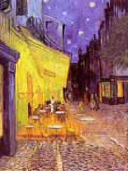
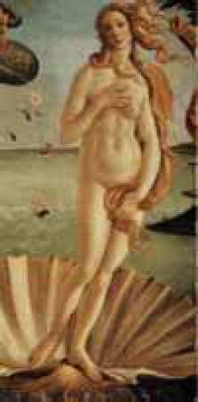
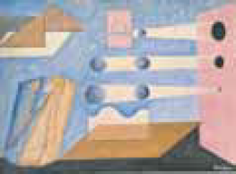
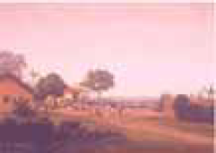
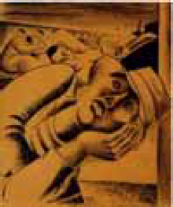

Considerando, para além do aspecto temático, a associação entre a forma e o estilo de representação dos textos literários e dos quadros apresentados a seguir,
assinale a opção em que não se verifica uma inter-relação de semelhança entre literatura e pintura.
Alucinação de mesas
que se comportam como fantasmas
reunidos
solitários
glaciais.
Carlos Drummond de Andrade. Farewell. Rio de Janeiro/São Paulo: Record, 1996, p. 33.
Van Gogh. Café Noturno.
A perfeição, a graça, o doce jeito,
A Primavera cheia de frescura,
Que sempre em vós floresce;
a que a ventura
E a razão entregaram este peito.
Luis de Camões. Obras. Porto: Lello & Irmãos, 1970, p. 50.
Sandro Botticelli . O nascimento de Vênus.
A luz de três sóis
ilumina as três luas
girando sobre a terra
varrida de defuntos.
Varrida de defuntos
mas pesada de morte:
como a água parada,
a fruta madura.
João Cabral de Melo Neto. Poesias completas. Rio de Janeiro: Sabiá, 1968, p. 341.
Vicente do Rego Monteiro. Paisagem Zero.
Cidade a fervilhar cheia de sonhos, onde
O espectro, em pleno dia, agarra-se ao
passante!
Flui o mistério em cada esquina, cada
fronte,
Cada estreito canal do colosso possante.
Charles Baudelaire. As flores do mal. Rio de Janeiro: Nova Fronteira, 1985, p. 331.
Frans Post. Povoado no Basil.
Não vê que me lembrei lá no norte, meu
Deus!
muito longe de mim,
Na escuridão ativa da noite que caiu,
Um homem (...)
Depois de fazer uma pele com a
borracha do dia,
Faz pouco se deitou, está dormindo.
Esse homem é brasileiro que nem eu...
Mário de Andrade. Descobrimento. (Dois poemas acreanos) In: Poesia completa. Belo Horizonte/Rio de Janeiro: Villa Rica, 1993, p. 203.
Santa Rosa. Madrugada.